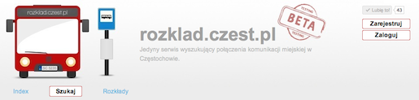
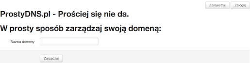

")
Hello :)
My name is Jakub Gorzelak (goozzik).
I am web developer using technologies like Ruby language and Rails framework.
I make web applications for mobile devices and desktop.
Projects:
rozklad.czest.pl
Startup. Major developer. Service for searching public transport schedules.
prostydns.pl
Easy domain registration and cofiguration. Site is still under development.
I am person who covers working between front-end and back-end.
